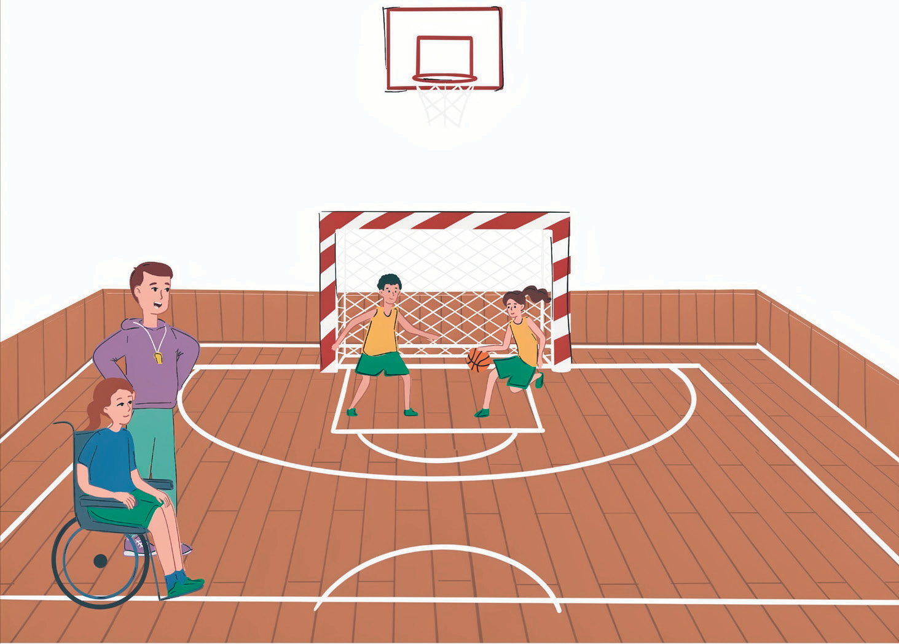

Mirëkuptimi, solidariteti, empatia dhe respekti ndaj të tjerëve
Ndihem i/e barabartë
Situata 1.
Të ndihesh i barabartë me të tjerët është prirje krejtësisht e natyrshme. Sytë e qeshur të Besës, e cila ishte ulur në karrocën me rrota, dukeshin sikur luanin me topin që godiste herë një kosh, herë një tjetër në fushën e basketbollit. Sa entuziazëm shprehnin sytë e saj! Kishte kohë që ndiqte lojërat tona, madje ishte tifozja jonë e përhershme.
Trajneri i basketbollit na njoftoi se kishte menduar diçka të veçantë. Dhe vërtet ashtu ndodhi
